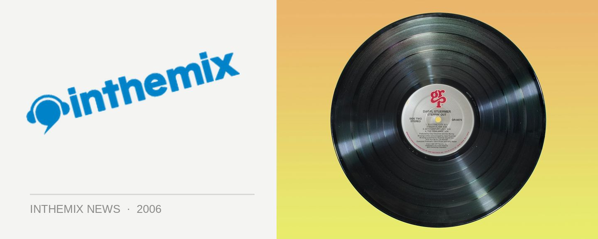

Third stage announced for Beats on the Beach on NYD
Massive New Years Day festival for Ballina gets even bigger with the announcement of a third stage entirely devoted to dance.
Beats on the Beach is one of the newest additions the New Years festival lineup and takes place in the coastal NSW town of Ballina, only 15 minutes from Byron Bay. Featuring over 25 international, national and local performers and the organisers have just announced an entire third stage has been added to the already huge line up.
The Eastcape Dance Space Stage will be set in a little forest glade just off the main floor action of the Fractured Beats Stage. Featuring its own roving performers, bar and market stalls, the focus of the new stage will be the finest established and emerging acts from Australia’s most eastern tip, Ballina to Byron, and beyond. Styles will include electro, tech, house, acid, grime, hip hop, rnb, breaks and more, and will be supplied by Captain Kaine, Dave C, E.V.P (live), Flynn ‘n’ Clegs, Jet More, Kristin, M – Phonik, Pob, Sean Candy + Interact and Terraspatial.
The full festival lineup will now be:
Rockit Stage: Pete Murray, End of Fashion, Sick Puppies, Karnivool, Van She, Bodyjar, Wolf & Cub, Red Riders, Avalon Drive, Bourbon Street, National Pornographic, Gust Of Gravity, Tentative, Operator Please
Fractured Stage: Pendulum + MC Verse, Infusion, Katalyst & RU:CL, FreQ Nasty, Saul Williams (USA), Nextmen + Dynamite MC (UK), Concord Dawn (NZ), 10 sui (UK), Soma Rasa, Mission Ignition, VJ Spook, Noodles, Raz Bin Sam & the Lion I Band, Basek & Sadik
Eastcape Dance Space Stage: Captain Kaine, Dave C, E.V.P (live), Flynn ‘n’ Clegs, Jet More, Kristin, M – Phonik, Pob, Sean Candy + Interact (performance) & Terraspatial (décor)